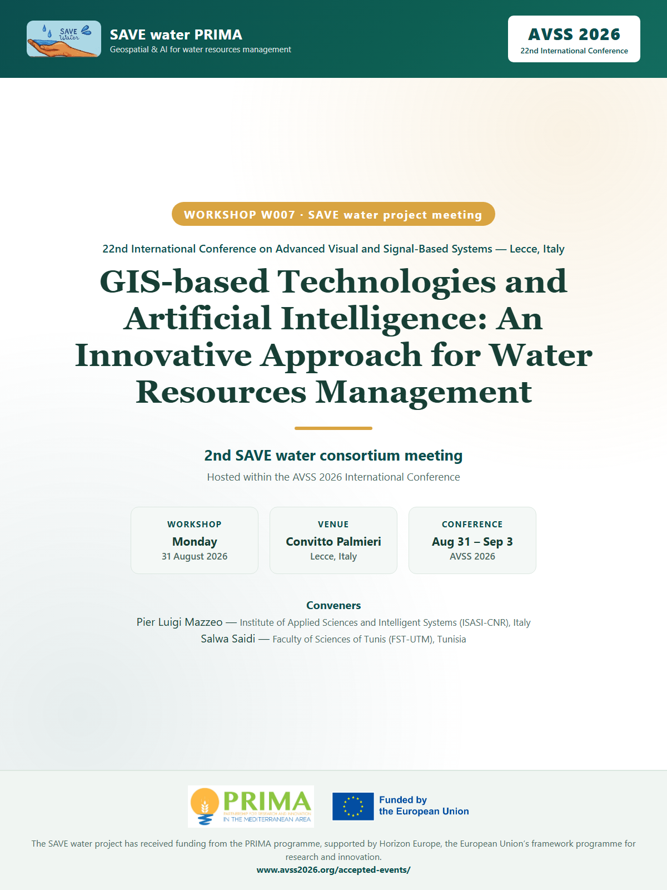

Workshop W007 — SAVE water Project meeting
GIS-based Technologies and Artificial Intelligence: An Innovative Approach for Water Resources Management

GIS-based Technologies and Artificial Intelligence
An Innovative Approach for Water Resources Management — SAVE water Project meeting
As part of the 22nd International Conference on Advanced Visual and Signal-Based Systems (AVSS 2026), the SAVE water consortium gathered for its second consortium meeting in a dedicated workshop (W007), held on 31 August 2026 at Convitto Palmieri, Lecce, Italy. The meeting gave the consortium the opportunity to share its work, experiences and vision with an international scientific community.
Organizers
-
Pier Luigi Mazzeo — Institute of Applied Sciences and Intelligent Systems (ISASI-CNR), Italy
-
Salwa Saidi — Faculty of Sciences of Tunis (FST-UTM), Tunisia
Topics
- Local implementation and stakeholder engagement through participatory workshops and Living Labs;
- Development and application of soil-water-plant modeling and precision irrigation strategies;
- Integration of satellite data for evapotranspiration and hydrological forecasting;
- Economic and governance analysis for sustainable pricing and resource allocation models.